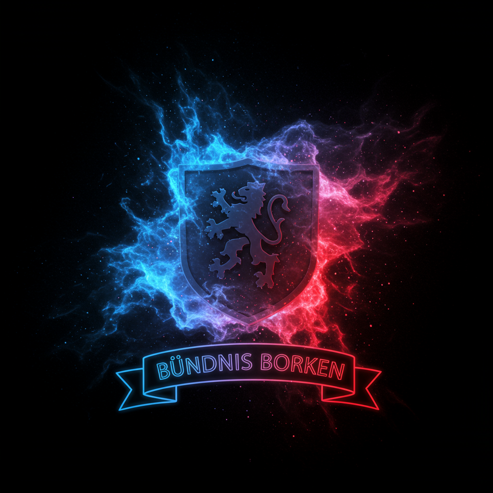

Hier könnte ihre Werbung stehen
Partner
Bündnis Borken
Bündnis Borken ist ein Zusammenschluss/eine kleine Nation, die gerne auf Minecraft Servern spielt.
Über Mich
Der_Zauberer_HD
Ein ganz normaler Let's Play Kanal für verschiedene Spiele.
Zauber_Studios
Ein Film Kanal, wo Minecraft Filme veröffentlicht werden.
Archiv
Minecraft Kumpel
Minecraft Kumpel war ein Minecraft Modpack Projekt, das über Lord_Simpel anfangs lief und dann wegen einem Streit von Olmago weiter gefürt wurde. Das Team bestand aus Der_Zauberer_HD, Fluff_Nicklas, Skymax801, Mod-Pottkartoffel und dem Hoster (Lord_Simpel/Olmago).
Hier kannst du das Modpack und die beiden Minecraft-Welten herunterladen (Stand: 26.01.2026):
Ludari
Ludari war ein von haubsichtlich Red_Seb geführtes Minecraft Projekt. Das als nachfolger von Mostkumple fungierte.
Hier kannst du die Minecraft-Welt herunterladen (Stand: 25.11.2025):
Moustkumpel
Moustkumpel war ein von haubsichtlich Red_Seb & Pottkartoffel geführtes Minecraft Projekt. Das als nachfolger von dem Rhababs Server 2 fungierte.
Hier kannst du LEIDER nicht die Minecraft-Welt herunterladen (Stand: 26.01.2026)

Planety
Planety war ein von haubsichtlich Lord_Simpel/Applepie/Lucius/zipfelklatscher_87_fuchsy geführtes Minecraft Projekt. Das als nachfolger von dem Rhababs Server 2 fungierte.
Hier kannst du LEIDER nicht die Minecraft-Welt herunterladen (Stand: 26.01.2026)
Rhababs Server 2
Text-box
Hier kannst du evt. bald die Minecraft-Welt herunterladen (Stand: 26.01.2026)
Lunaria
Informationen zu Lunaria.
Server-Start angekündigt!
Markiert euch den Kalender: Am 31. Jänner 2026 um 19:00 Uhr geht es offiziell los!
⏰ Uhrzeit-Anpassungen: Falls der Termin für euch gar nicht passt, meldet euch bitte direkt beim Team im Discord
🛠️ Mod-Paket: Es wurde sich auf Neues Terrain und Strukturen ohne Client mods geeinigt.
Wir freuen uns auf euch und hoffen, dass euch der Server gefällt!